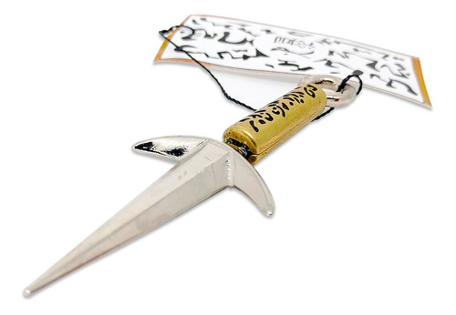

Kunai

Kunai (苦無 Kunai) é uma arma ninja que consiste em uma lâmina de ferro com um grande furo na base, destinado a amarrar cordas, originário da era Tensho no Japão. Eram destinadas ao arremesso com ou sem corda, a fim de ferir o inimigo à grande distância. Muito utilizada por ninjas em casos de assassinatos. Kunai é uma arma muito eficiente e que pode ser destinada para diversos fins. Os ninjas utilizavam-na para arremesso, servir de uma espécie de pinos de escalada, para fazer armadilhas e etc.